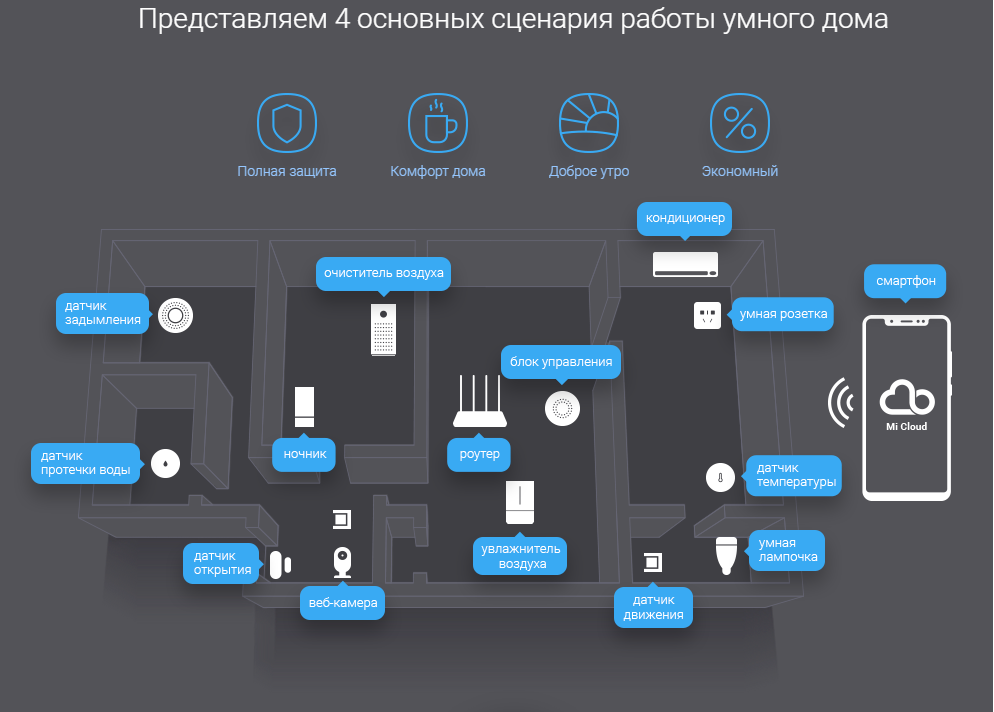

Главная
Контакты
Полная защита
Комфорт дома
Доброе утро
Экономный
Система умный дом

Описание товара:
Xiaomi «Умный дом» – автоматизированная система,
позволяющая с легкостью управлять бытовой техникой, она создаст уют в доме, облегчит жизнь потребителя во многих аспектах.
Характеристика товара.
Оригинал Xiaomi «умный дом» включает в себя несколько датчиков, посредством которых пользователь имеет возможность
управлять системой дистанционно. Гаджет умеет оценивать степень освещенности, показывает текущую температуру воздуха, оповестит потребителя о движениях,
наблюдающихся в доме в момент его отсутствия.
Подробное описание товара.
Комплект умного дома Xiaomi Smart Home оснащен следующими элементами:
- Датчик, работа которого заключается в обработке информации и передачи ее в сеть;
- Датчик, фиксирующий движения. Настроив элемент, пользователь может использовать подсветку комнаты в любое удобное время;
- Датчик, предназначенный для монтажа на дверь или окно;
- Беспроводной дверной звонок.
- Набор датчиков Xiaomi для «умного дома» может работать в сочетании с другими элементами системы, например, лампами, розетками и прочее.
- Комплект прост в использовании, а для его установки не потребуется привлечение специалиста.
All rights reserved, 2018